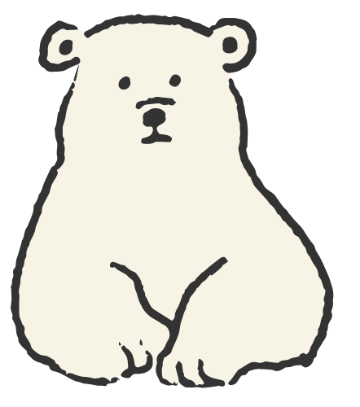

KOBA式体幹
トレーニング
「健康な体を維持したい」
「ぽっこりお腹が気になる」
「衰えてきた筋力を取り戻したい」…
KOBA式体幹トレーニングはスポーツから
日常生活の動作、ダイエットなど
あらゆる分野で効果的なトレーニングです！
KOBA式体幹
トレーニングとは？

KOBA式体幹バランストレーニング（通称KOBA☆トレ）は、プロトレーナーの木場克己が多くのトップアスリートの
リハビリに携わる中で考案したメディカル発想のカラダに優しい、安心・安全なトレーニングです。
長友佑都選手（スュペル・リグ・カラタサライ）や金崎夢生選手（鹿島アントラーズ所属）、
池江璃花子選手（ルネサンス亀戸）といった超一流選手も取り組んでいます！
４つの能力強化で
カラダが変わる！
KOBA☆トレで4つの能力を高めることで
日常生活やスポーツの
パフォーマンスは大きく向上します。
体幹・体軸というカラダの中心部分の筋肉や神経、
つまりインナーマッスルを鍛えることで
バランス感覚も強化します！
- 柔軟性
- カラダが柔らかくなれば動きもスムーズに！
- 安定性
- 骨盤の安定によってブレないカラダの軸が完成！
- バランス
- 普段使われていない筋を呼び覚ましバランス力が向上！
- 連動性
- 多くの筋肉を同時に連動させ
動きを力強くスムーズに！